Flicker Tonic
2015
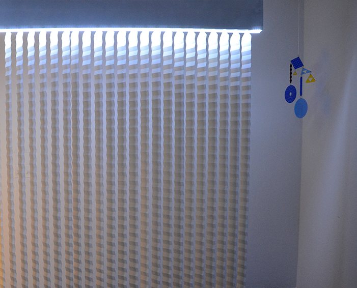
Rotating vertical venetian blinds, Bluebeard mobile
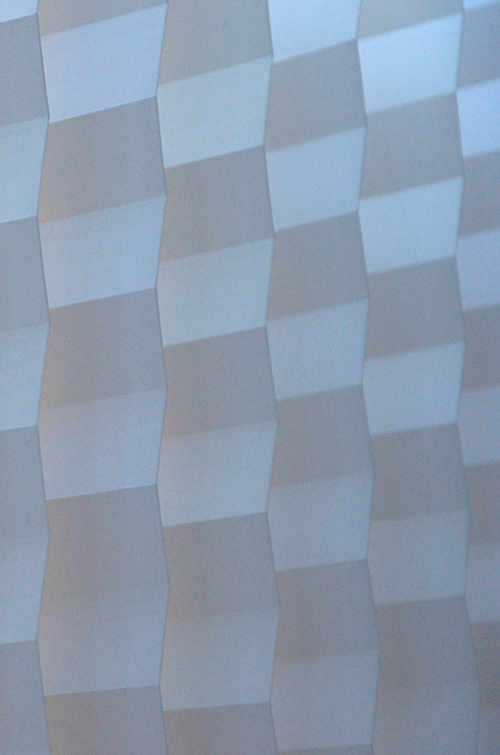
Rotating vertical venetian blinds
Rotating vertical venetian blinds
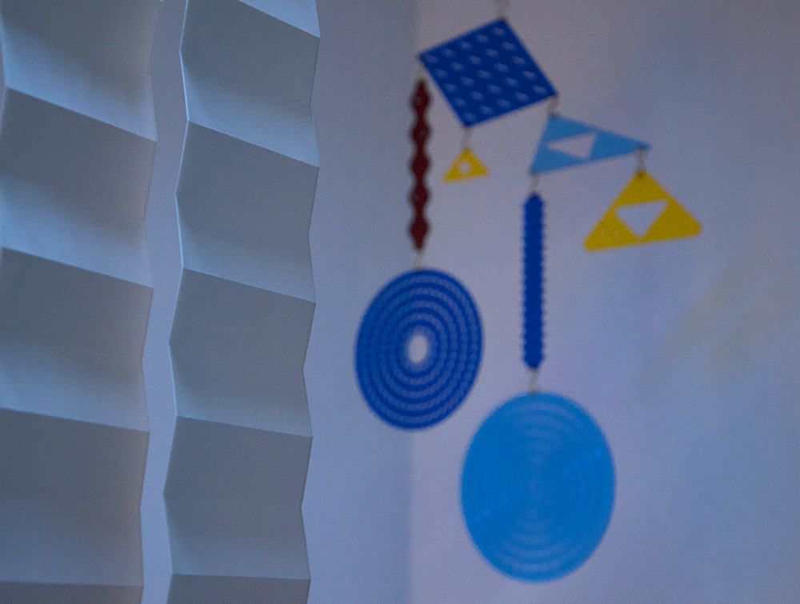
Rotating vertical venetian blinds, Bluebeard mobile
Rotating vertical venetian blinds
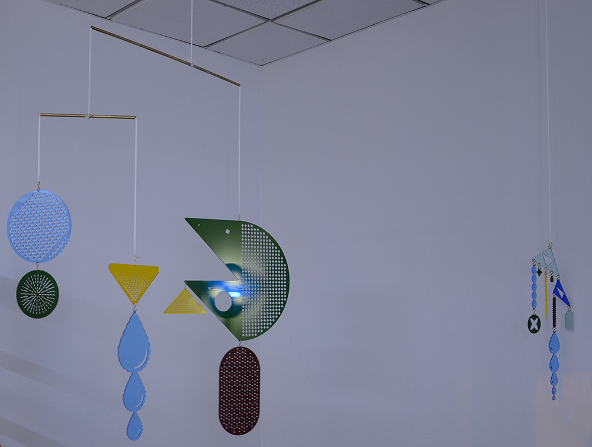
Flock mobile, Capillary mobile
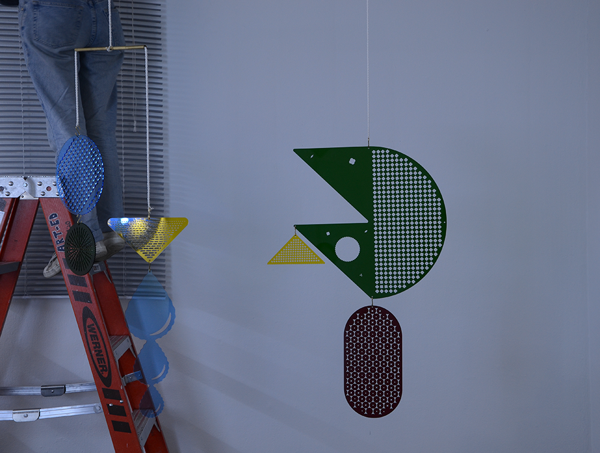
Flock mobile, rotating horizontal blinds
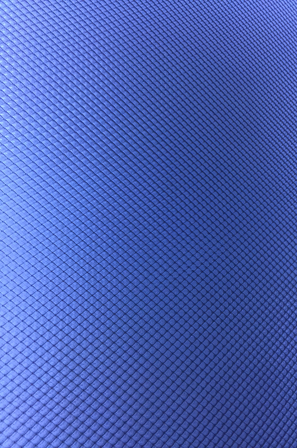
moire lightbox
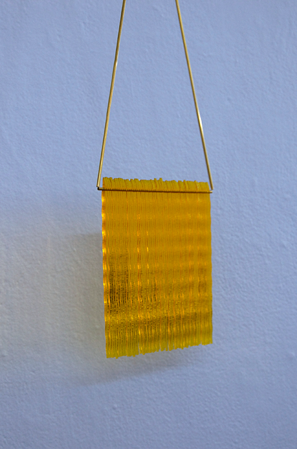
Mellow Yellow
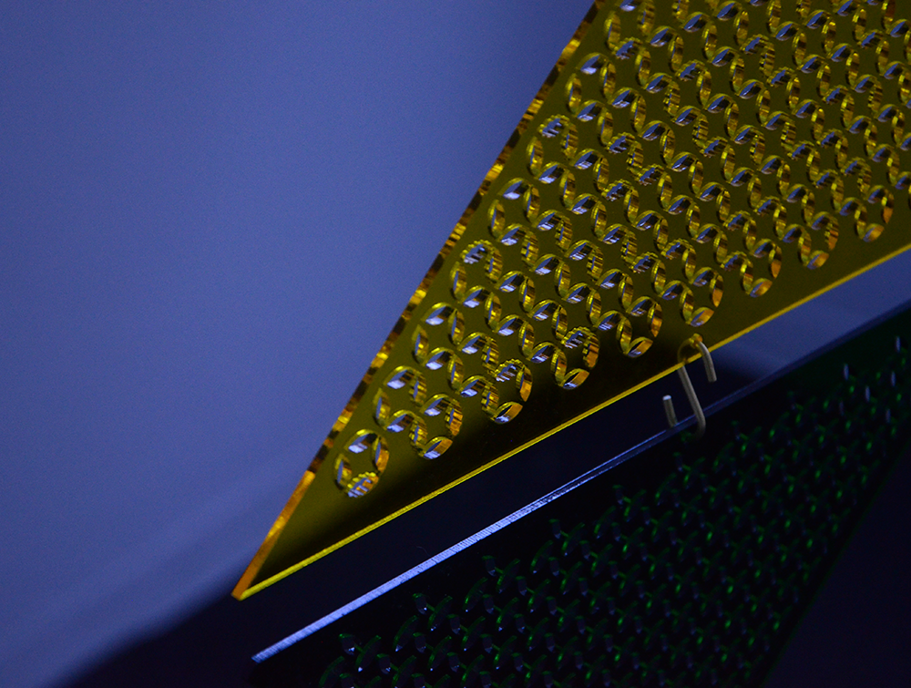
Shape Stack
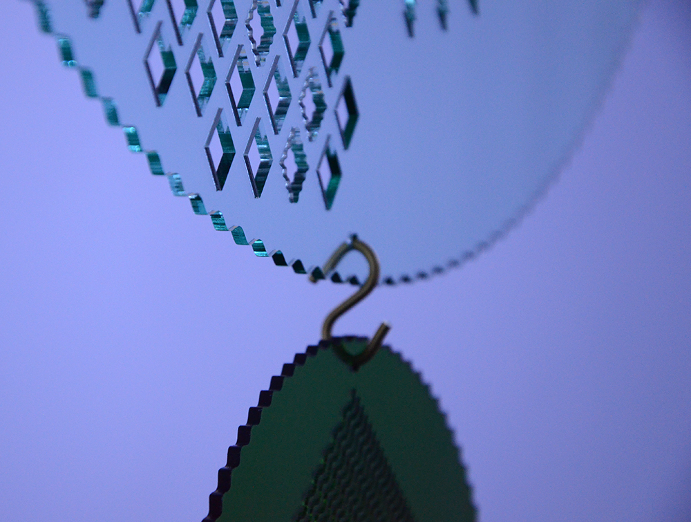
Shape Stack
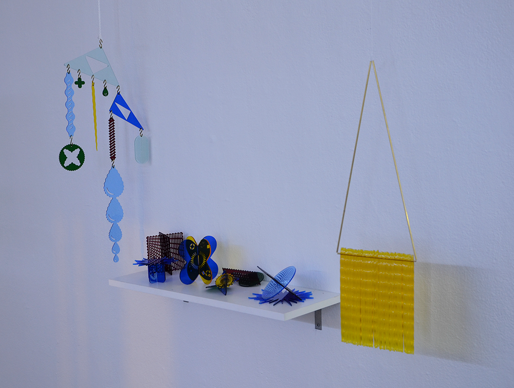
Capillary Mobile, Shards, Mellow Yellow
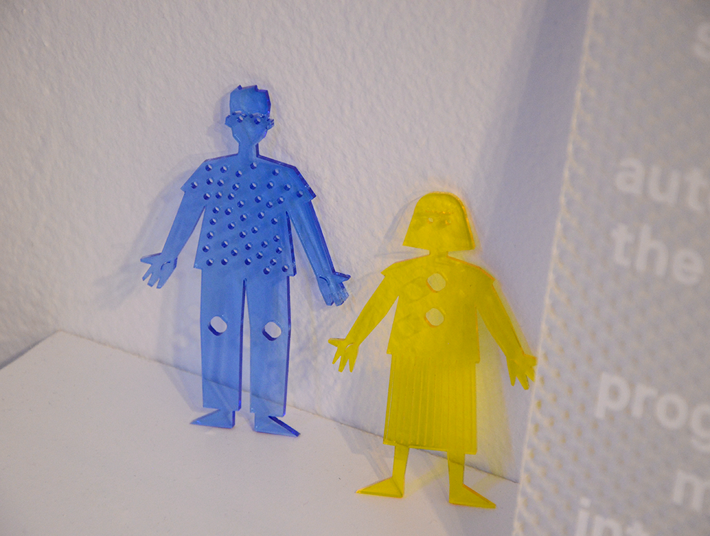